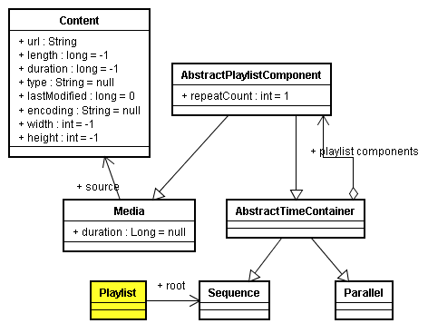
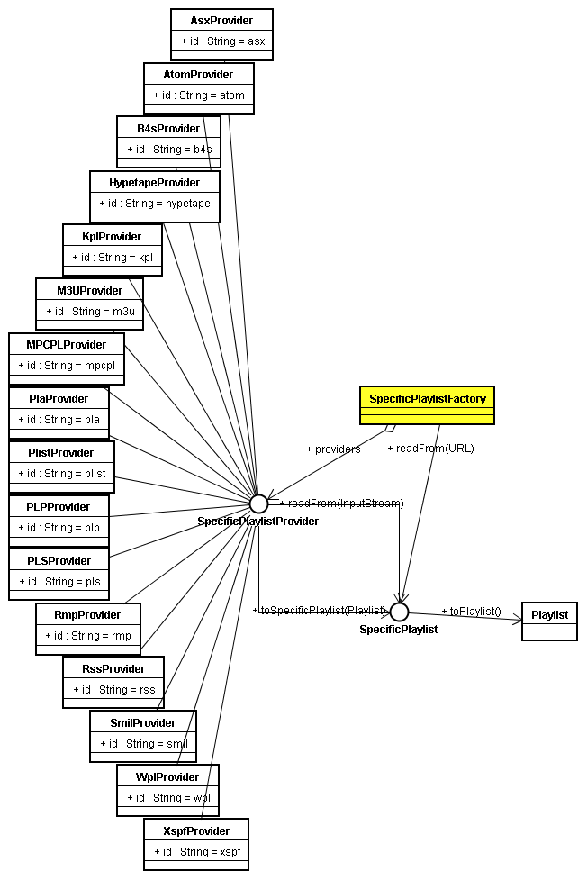

{@link java.io.File} file = new {@link java.io.File}("a_playlist_file");
{@link christophedelory.playlist.SpecificPlaylist} specificPlaylist = SpecificPlaylistFactory.getInstance().{@link christophedelory.playlist.SpecificPlaylistFactory#readFrom(java.net.URL) readFrom}(file);
if (specificPlaylist == null)
{
throw new Exception("Invalid playlist format");
}
{@link christophedelory.playlist.Playlist} genericPlaylist = specificPlaylist.{@link christophedelory.playlist.SpecificPlaylist#toPlaylist() toPlaylist}();

Now you want to save your playlist in a given format, let's say "ASX". First you have to retrieve the associated playlist provider. Two methods are available for that purpose:
{@link christophedelory.playlist.SpecificPlaylistProvider} provider = SpecificPlaylistFactory.getInstance().{@link christophedelory.playlist.SpecificPlaylistFactory#findProviderById(String) findProviderById}("asx");
{@link christophedelory.playlist.SpecificPlaylistProvider} provider = SpecificPlaylistFactory.getInstance().{@link christophedelory.playlist.SpecificPlaylistFactory#findProviderByExtension(String) findProviderByExtension}(".asx");
{@link christophedelory.playlist.SpecificPlaylistProvider} provider = specificPlaylist.{@link christophedelory.playlist.SpecificPlaylist#getProvider() getProvider}();
The "specific" playlist providers hierarchy is the following:

Now convert your generic playlist description to the chosen format:
{@link christophedelory.playlist.SpecificPlaylist} newSpecificPlaylist = provider.{@link christophedelory.playlist.SpecificPlaylistProvider#toSpecificPlaylist(christophedelory.playlist.Playlist) toSpecificPlaylist}(genericPlaylist);
If everything ran well, you can now flush the result to any output stream:
newSpecificPlaylist.{@link christophedelory.playlist.SpecificPlaylist#writeTo(java.io.OutputStream,String) writeTo}(System.out, null);
Enjoy!